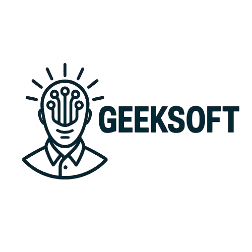

|
 Navigating the Future: Inteligencia Operativa y Predictiva
Transición de procesos Legacy a un ecosistema de datos centralizado y automatizado
Para: Naviera Petral (Atn: Fernando Jarten)
De: Geeksoft / Antigravity (Advanced AI & Data Solutions) Fecha: Junio 2026 Objetivo: Modernización integral de la gestión de Forecast y operaciones Core. 1. Fase de Diseño y Definición de AlcanceNuestra propuesta se divide en dos enfoques estratégicos complementarios. El objetivo no es solo predecir, sino validar y ajustar.
2. Arquitectura y Desarrollo del SistemaPara la construcción del sistema, proponemos reemplazar los silos de información con un Stack Tecnológico de última generación, robusto y escalable. Base de DatosSUPABASE(PostgreSQL) Actuará como la única fuente de verdad, centralizando maestros, tarifas y flota con seguridad bancaria. Backend & UISTREAMLIT(Python) Desarrollo ultra-rápido de dashboards interactivos y lógica matemática dura libre de errores de celda. InfraestructuraCONTABO(Cloud VPS) Servidor dedicado en la nube que garantizará que Petral tenga acceso continuo 24/7 a la herramienta. 3. Implementación y AcompañamientoEl éxito de la herramienta no solo depende del código, sino de la adopción de los usuarios.
Construyendo el futuro de la logística marítima.
| ||||||